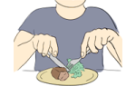
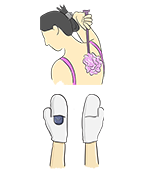
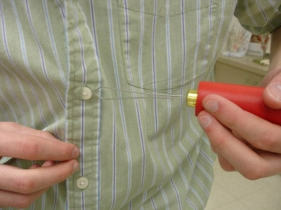
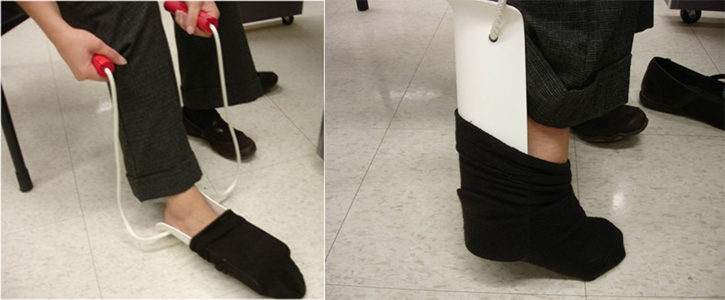

Module: Activities of Daily Living
Janet L. Poole, PhD, OTR/L
Resources
Tools and adaptive gadgets to help with scleroderma
Identify activities you’d like to do more easily and strategize with this printout.
Printout PDFActivity plan to improve ease in performing daily tasks
Identify activities you’d like to do more easily and strategize with this printout.
Printout PDFEating
Sometimes the loss of motion in your hands may make it hard to hold and use utensils for eating and drinking. The following suggestions may make mealtime easier by providing ideas to modify utensils or to help you select products that are easier to use. If you have trouble swallowing, additional suggestions to ensure your safety while eating can be found in the module on Dysphagia and the Digestive Tract.
If holding objects is difficult:
- Build up the handles by wrapping foam around them.
- Slide the handle into foam, such as plumber’s foam.
- Buy silverware with thick rubber handles
- Use wine glasses and hour glass-shaped glasses. They may be easier to hold.
- Use mugs with large handles that are insulated for both heat and cold.
- Sharp steak or paring knives make it easier to cut meat.
.png) You can also take the following steps to help protect your hands:
You can also take the following steps to help protect your hands:
- Cotton gloves worn overnight with a heavy moisturizer will help the skin absorb the moisturizer and help prevent fissures (cracks).
- Cover skin cracks, ulcers, or calcium deposit areas with a cloth (not plastic) bandage, and use an antiseptic to protect against infection. Change the bandage whenever it gets wet.
- Some medications, such as methotrexate and mycophenolate (Cellcept®), have been found to soften the skin in early diffuse scleroderma.
Bathing and Dressing
Scleroderma can present challenges to getting ready in the morning. The next sections provide tips to make bathing and dressing easier. Several suggestions are provided, but it is important for you to be patient and experiment with the different techniques to find which ones work best for you. Be flexible in your strategies.
Bathing

- Put railings and non-skid or rubber mats in bathtubs/showers.
- Purchase shower chairs and benches to put in bathtubs/showers.
- Use a long, curved sponge for washing.
- Put dispensers on the shower wall to hold shampoo, conditioners and soap.
- Buy wash mitts if it is hard to hold a washcloth.
- Dry off with a robe or lightweight beach towel.
Dressing
- Lay your clothes out the night before.
- Select clothes that are easy to put on and remove, such as pants with elastic waistbands and pullover shirts.
- Replace fasteners on pants with Velcro (some tailors and alterations shops will do this for you).
- Thigh-high hose may be easier to put on than pantyhose.
- Wearing clothes with deep pockets can eliminate the need to carry a purse.
- Select a battery-operated or self-winding watch with a stretch band. Many battery stores will replace the battery for you.
- Try to avoid clothes with zippers, fasteners, and buttons. If you like zippers, have someone put a zipper pull, split ring, or leather loop through the hole in the zipper.
- Buttons can be sewn on with elastic thread, so you can pull the shirt on over the head. Old-fashioned button hooks can be used to pull buttons through buttonholes. 
- Clip-on neckties and bow ties eliminate the need to tie a knot or bow.
- Use belts with magnetic closures.
- If you have difficulty reaching your feet to put on shoes or socks, you can buy sock aids and long shoehorns. 
- If tying shoes is hard, try slip-on shoes or shoes with Velcro fasteners. Elastic shoelaces are also available.
- Wear stretchy rings and bracelets. A jeweler can also put adjustable bands/clasps on rings.
Getting up from chairs and beds
- Raise the height of the chair or bed by placing blocks of wood under the legs or by using chair leg extenders.
- A raised toilet seat (some are padded) and grab bars mounted on walls can make it easier to get up off the toilet.
- Stools and benches are available for the bathtub/shower, as are grab bars to mount on the wall.